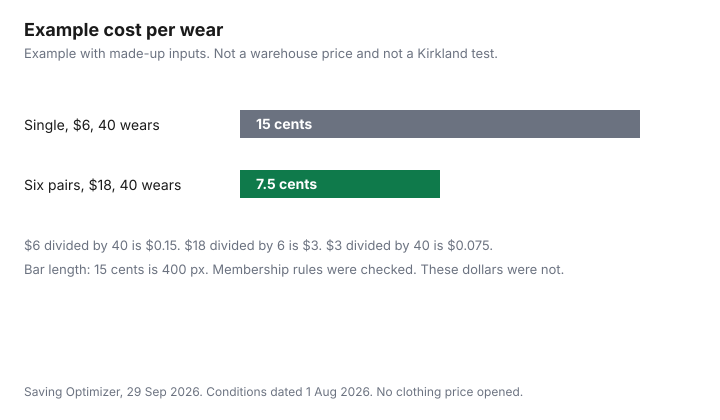

Clothing · Canada
Costco Clothing in Canada: What's Worth Buying (Socks, Merino, Outerwear) and What to Skip
Costco clothing is a warehouse decision, not a brand ranking. This page does not name a best sock, a best coat, or a merino score, and it does not print a shelf price, because no clothing price was opened on costco.ca on 29 Sep 2026. What was opened is the Membership Conditions and Regulations dated 1 August 2026, including fees and the satisfaction guarantee, and a warehouse-return answer published 10 October 2025. Use those rules, then judge the garment in the aisle with the checklist below. Membership math for groceries and the break-even on the fee live on the Food guides linked here. Activewear specs, without a ranking, are in the activewear guide.
Disclosure: Discounted retailer gift cards are an offer type. Saving Optimizer may earn a commission if a partner link is added later. No partnership is claimed with Costco or any gift-card seller. A gift card does not change a warehouse price or the membership rules below. Education only. This page does not rank clothing.
Key takeaways
- Conditions dated 1 Aug 2026: Gold Star and Business memberships are $65 plus tax for 12 months. Executive is $130 plus tax. You must be 16 or older. Guests do not have purchasing privileges.
- No sale is made without a valid membership card. Only Costco Canada and Costco US members with a valid card can shop on Costco.ca. A Shop Card is a listed way to pay, not a non-member exception this page found.
- The merchandise guarantee refunds the purchase price, with listed exceptions. Clothing is not on that exception list. Electronics and major appliances are 90 days. Costco may add restrictions later, shown at the point of purchase.
- The warehouse answer published 10 Oct 2025 says you can return an item to any warehouse. Packaging is preferred, not required. A receipt is preferred. They will try without one.
- No clothing price, shipping threshold, or published season calendar was opened. Compare the unit you see that day. The chart uses made-up inputs.
What Costco carries in clothing and how seasonal it is
Warehouses sell clothing beside groceries, and the assortment changes. This check did not open a Costco page that publishes a clothing calendar, a merino specification, or a list of categories that are always in stock. Treat what is on the floor, or on Costco.ca that day, as this visit's assortment. Seasonal outerwear can be gone the next month. Basics such as socks can sit longer, or they can also disappear. Do not plan a year of shirts from one walk-through. If you need a size that is missing, the weaker-fit section below is the reason to leave rather than to buy the wrong one because it is in the building.
Kirkland and other labels are brands Costco sells. This page does not score them. A label is a prompt to read fibre content, size, and the return rule, not a quality medal. Household paper and detergent comparisons, which do use dated prices, are in the household items guide. Do not copy a detergent unit price into a sock decision.
Categories where value is usually strong: socks, base layers, kids' basics
The phrase usually strong is a shopping test, not a survey. Socks, base layers, and kids' basics are often sold as several pairs or pieces in one package. The test is cost per wear after you know the price and how many wears you will get, not the package price alone. Read the fibre line. A base layer that is mostly the fibre you wanted is a different product from a blend the package photo suggests. Kids' basics are strong when the child will outgrow them through ordinary wear and the size is the size you need now, not two sizes ahead that you may not like later. Work through the package count. Example with made-up inputs, in the chart: six pairs at $18 is $3 a pair, and 40 wears a pair is 7.5 cents a wear. That is arithmetic on invented numbers so the division is visible. It is not a Kirkland price.
Where it's weaker: fit variety, sizes, style
A warehouse pallet is a narrow size run. If your size is absent, the low package price of a neighbouring size is not a saving. Style is the other weakness. You are choosing from what arrived, not from a full line of cuts. Outerwear, activewear, and work pants fail the test when the fit is wrong, the season is almost over, or the fabric is a blend you did not mean to buy. Activewear opacity and seams are the spec checklist. Do not buy a coat because the endcap is large. Try it on, including the layer you will wear under it, and use the return rule only as a backstop, not as the plan.
Returns on clothing at Costco
The conditions dated 1 August 2026 say Costco guarantees satisfaction on every product and will refund the purchase price, with exceptions. The exceptions named there are electronics within 90 days (televisions, major appliances, projectors, computers, cameras, drones, camcorders, digital music players, tablets, smart watches, cellular phones, and other electronics identified from time to time), diamonds of 1.00 carat or larger with paperwork and a short verification, cigarettes and alcohol where the law prohibits a return, products with a limited life such as tires and batteries that may carry their own warranty, custom products made to a member's specifications, gold bars and bullion, silver bars and bullion, e-certificates, and gift cards and tickets. Clothing is not in that list. Costco may later restrict returns on these or other products. Restrictions will be shown at the point of purchase. Read the sign on the item you buy. A future limit is not a limit today, and today's list is not a promise that clothing stays unrestricted.
The help answer How can I return an item purchased in a Costco Warehouse, version 4.0, published 10 October 2025, says that with a few exceptions there is a 100 percent satisfaction guarantee, you return the product to any Costco warehouse, packaging is not required, and a receipt is preferred. If the receipt is missing they will try to process the return. Electronics and major appliances must come back within 90 days. For Quebec, the same conditions say Costco does not guarantee replacement parts, repair services, or repair information, citing section 39.2 of the Consumer Protection Act, and they repeat that satisfaction is guaranteed with some exceptions. Membership fees are refundable if you are dissatisfied: the conditions say Costco will cancel and refund the membership fee at any time. That refund is the fee, not a clothing discount.
In-warehouse vs Costco.ca pricing and shipping
No warehouse price and no Costco.ca price for a garment were opened, and no shipping threshold was opened. Do not assume the building is cheaper, and do not assume the website is. On the day, write down both numbers if both exist, including shipping if the site adds it, and divide by the number of pieces in the package. The conditions say only Costco Canada and Costco US members with a valid membership card can shop on Costco.ca. The same document says an Executive Reward coupon may not be redeemed online at Costco.ca or Costcobusinesscentre.ca. A 2 percent Reward is calculated on qualifying pre-tax purchases, including online at Costco.ca, with a cap of $1,250 in a 12-month period and a list of exclusions. Whether a given clothing purchase earns the Reward is a question for that exclusion list, which the conditions say is also at the membership counter. The fee comparison itself is the Executive and Gold Star guide and the membership guide. A small household's version is the couples framework.
Membership, non-member shopping and gift cards
Membership is available to qualifying individuals 16 or older. A Canadian federal or provincial government-issued ID is presented at the warehouse membership counter. Gold Star is $65 plus applicable taxes per 12 months and includes one Household card. Business is also $65 plus tax, with the same Household card, and up to six Affiliates at $65 each. Executive is $130 plus tax, limit one per business or household. The conditions say no sales will be made to any person unless they have a valid membership card. Each cardholder may bring children and up to two guests. Guests do not have purchasing privileges. You scan the card, physical or in the app, on the way in and at checkout. Copies and photos of the card are not acceptable.
Payment methods listed include cash, debit, a Costco Shop Card, a preprinted personal cheque, and credit cards Costco accepts from time to time. That Shop Card line is a way a member pays. This page did not find a sentence that says a non-member may shop with a gift card alone. Do not rely on a workaround that is not in the conditions you are holding. A discounted retailer gift card, if you buy one as an offer type, is still spent under these membership rules. It does not remove the card check at the door.
| Category | Usually strong when | Weaker when |
|---|---|---|
| Socks | The package count is the count you will wear, and the fibre line matches what you wanted. | The only size is wrong, or you will not finish the package. |
| Base layers | You can try the fit under a real shirt, and the fibre content is the one you meant. | The cut is the only cut in the building and it does not fit. |
| Outerwear | The size is here this visit and you will wear it for more than one season. | The season is nearly over, or the size run skipped you. No season calendar was published on the pages opened. |
| Kids' basics | The size fits now and the child will wear the pieces out or outgrow them cleanly. | You are buying far ahead, or the item is protective sports gear you should buy for the hazard, not the pallet. |
| Activewear | It passes the spec checks in the activewear guide: gusset, seams, opacity. | You are buying a logo story. This page does not rank tights. |
| Work pants | The fit matches the job and the fabric weight is what the work needs. | The rise or the length is the only option and it is wrong. A tax deduction is a separate question, and most employees cannot deduct ordinary work clothes. |
| Rule | What the page says |
|---|---|
| Gold Star and Business fee | $65 plus applicable taxes for 12 months from the primary cardholder's enrolment. One Household card. |
| Executive fee | $130 plus applicable taxes for 12 months. One Executive membership per business or household. |
| Who can buy | A valid membership card is required. Guests have no purchasing privileges. Age 16 or older to be a member. Costco.ca: Costco Canada and Costco US members with a valid card. |
| Clothing returns | Satisfaction guarantee refunds the purchase price. Clothing is not in the exception list dated 1 Aug 2026. Electronics and major appliances: 90 days. Future limits will be shown at purchase. |
| How to return | Any warehouse, per the 10 Oct 2025 answer. Packaging not required. Receipt preferred. They will try without a receipt. |
| Reward coupon online | The conditions say Reward coupons may not be redeemed online at Costco.ca. The 2 percent Reward calculation has its own exclusions and a $1,250 cap. |
Example with made-up inputs. The dollars and the wear count are not Costco prices.

Sources & date stamps
- Costco Wholesale Canada, Membership Conditions and Regulations, costco.ca, dated 1 August 2026, page built 31 Aug 2026, checked 29 Sep 2026. Fees, guest rules, Costco.ca access, satisfaction guarantee and exceptions, Quebec repair notice, Shop Card as a payment method, Reward coupon limits.
- Costco customer service, How can I return an item purchased in a Costco Warehouse, version 4.0, published 10 October 2025, checked 29 Sep 2026. Any warehouse, packaging not required, receipt preferred, 90 days for electronics and major appliances.
- No clothing shelf price, no merino specification, no shipping threshold, and no clothing season calendar were opened. The per-wear chart is made up.
Frequently asked questions
Is Costco clothing good quality?
This page does not score it. No lab test and no shelf price were opened on 29 Sep 2026. Quality, for a household, is whether the size exists, the fibre line matches what you wanted, and you will wear the pieces enough times to justify the package. Socks, base layers, and kids' basics are the categories where a multi-piece package can work. A missing size is not a bargain.
Can you return clothes to Costco?
The conditions dated 1 Aug 2026 guarantee a refund of the purchase price and do not list clothing among the exceptions. Electronics and major appliances are 90 days. The warehouse answer published 10 Oct 2025 says you can return an item to any warehouse, packaging is not required, and a receipt is preferred. Costco may add limits later, shown at the point of purchase. Read the sign on the item.
Is Costco clothing cheaper online or in the warehouse?
This check did not open a clothing price in either place, or a shipping threshold, so it will not say which is cheaper. Members in Canada and the United States can shop Costco.ca with a valid card. Compare the two totals you see that day, including shipping if the site adds it, and divide by the number of pieces. Reward coupons may not be redeemed online, under the conditions dated 1 Aug 2026.
Do you need a membership to buy clothes at Costco?
Yes, on the conditions dated 1 Aug 2026. No sale is made without a valid membership card, and guests do not have purchasing privileges. Gold Star and Business are $65 plus tax. Executive is $130 plus tax. A Shop Card is listed as a way to pay, not as a non-member pass this page found. You must be 16 or older to hold a membership.
What clothing should you skip at Costco?
Skip the piece that is the wrong size, the wrong fibre, or a style you will not wear, even if the package looks large. Outerwear near the end of a season and work pants with the wrong rise are the usual misses. This page does not name a product to avoid. Activewear still has to pass a fit and opacity check. No price ranking is implied.